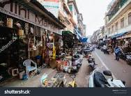
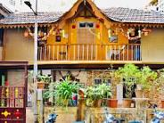
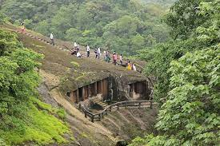
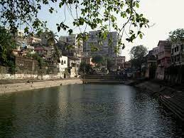
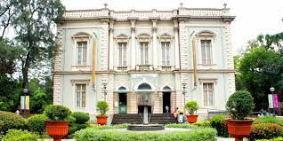
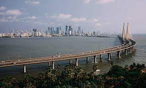

Mumbai, often known as the "City of Dreams," is a bustling metropolis that never sleeps. It's famous for its iconic landmarks, Bollywood glitz, and vibrant street life. Yet, beneath the surface of this lively city lies a treasure trove of hidden gems waiting to be discovered. In this blog, we'll take you on a journey beyond the ordinary, uncovering the unseen facets of Mumbai that will leave you enchanted.
1. Chor Bazaar - The Thieves' Market
Mumbai's Chor Bazaar, also known as the Thieves' Market, is a chaotic and captivating place where you can find everything from antique treasures to vintage Bollywood posters. Wander through its narrow lanes and haggle with vendors to unearth unique items and stories. One sunny afternoon, I ventured into the maze-like lanes of Chor Bazaar, curious to explore its rumored treasures. The air was thick with the scent of antique wood, and the shops were filled with curiosities. Among the chaos, I stumbled upon a vintage camera collection that felt like a portal to Mumbai's history. It's here that I learned that Chor Bazaar is more than just a market; it's a living museum of the city's past.
2. Khotachiwadi - A Heritage Haven
Tucked away in the heart of South Mumbai, Khotachiwadi is a charming village that offers a glimpse into Mumbai's architectural heritage. Explore its colonial-era wooden houses adorned with colorful façades and intricate details. The first time I set foot in Khotachiwadi, I was transported to another era. The cobbled streets were lined with vibrant, wooden cottages adorned with bougainvillea. I struck up a conversation with a resident who shared stories of the village's preservation efforts. It was a rare glimpse into a Mumbai that time seemed to have forgotten.
3. Kanheri Caves - Ancient Serenity
Escape the urban hustle and head to the Sanjay Gandhi National Park to discover the Kanheri Caves. These centuries-old Buddhist rock-cut caves are adorned with intricate sculptures, meditation chambers, and serene surroundings. A visit to the Kanheri Caves was a journey into serenity. Surrounded by lush greenery, the intricate rock-cut sculptures whispered stories of devotion and ancient wisdom. Sitting in one of the meditation chambers, I couldn't help but feel a profound sense of peace, a stark contrast to Mumbai's bustling streets.
4. Banganga Tank - An Oasis of Tranquility
Amid the bustling streets of Walkeshwar Temple, you'll find the Banganga Tank. This ancient oasis of calm is steeped in history and offers a peaceful respite from the city's chaos. I stumbled upon Banganga Tank while searching for a quiet spot to escape the city's chaos. The ancient waters whispered stories of centuries past. I watched as pigeons and locals alike found solace beside its sacred waters, a living testament to Mumbai's multifaceted soul.
5. Sewri Fort - A Forgotten Fortification

Unearth the forgotten Sewri Fort, a relic of Mumbai's colonial past. Its crumbling walls and overgrown vegetation provide a glimpse into the city's history, offering a stark contrast to its modern skyline. The crumbling walls and overgrown vegetation of Sewri Fort held a mysterious allure. I explored its hidden nooks, imagining the battles fought within its walls centuries ago. Standing atop the fort's bastion, I marveled at the stark contrast between the ancient stones and the modern city skyline in the distance.
6. Dr. Bhau Daji Lad Museum - Mumbai's Hidden Gem
Delve into the rich cultural heritage of Mumbai at the Dr. Bhau Daji Lad Museum. This lesser-known museum houses a remarkable collection of art, textiles, and artifacts, providing insight into the city's history. My visit to the Dr. Bhau Daji Lad Museum was a journey through Mumbai's cultural tapestry. The museum's exhibits, ranging from intricate sculptures to textiles, offered glimpses into the city's rich heritage. As I walked through its halls, I felt a profound connection to the city and its history.
7. Banganga Festival - Musical Magic

Experience the Banganga Festival, an annual celebration of classical music held at the Banganga Tank. This hidden cultural gem showcases mesmerizing performances against the backdrop of the historic temple and water tank. Attending the Banganga Festival was a sensory delight. The strains of classical music filled the air as I sat by the tranquil tank. It was a magical evening, made even more special by the fact that it felt like a secret known only to a fortunate few.
8. Worli Sea Face Promenade - A Local's Secret
Escape the crowds of Marine Drive and discover the Worli Sea Face Promenade. This serene spot offers breathtaking views of the Arabian Sea, making it an ideal place for a leisurely walk or quiet contemplation. The Worli Sea Face Promenade became my personal retreat in the city. As I watched the sun dip below the horizon, I marveled at how this serene spot provided a stark contrast to Mumbai's relentless pace. It became my sanctuary, a place to reflect and recharge.
Mumbai's hidden gems are a testament to its diversity and rich history. So, whether you're a local Mumbaikar looking to explore your city anew or a traveler seeking the unconventional, these hidden treasures are sure to make your Mumbai adventure unforgettable. Don't miss the chance to delve deeper into the heart of Mumbai and uncover the magic that lies beyond the surface.